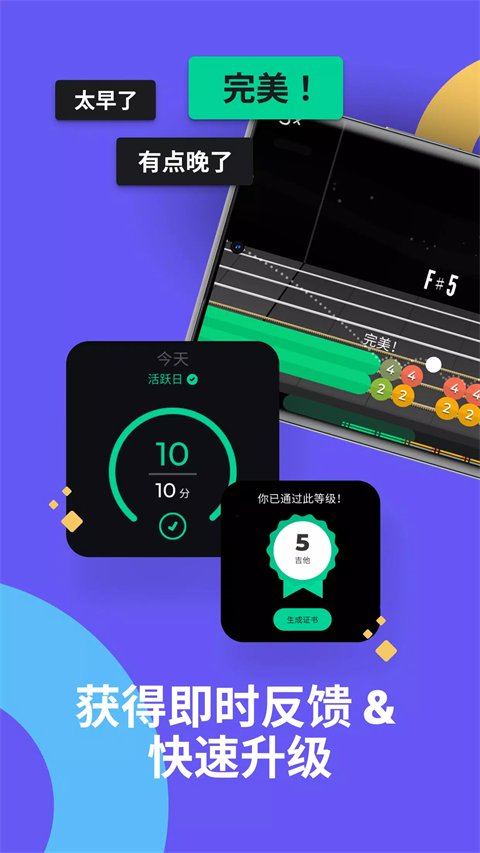

你以为Yousician只是个练琴App？藏着的这些功能我用了半年才摸透
Yousician不只是跟着谱子弹的工具——vocal range校准、transpose移调、颜色编码键盘、Activity Report邮件、贝斯音频接口设置……六个被官方藏得很深的冷功能，一个都不能漏。
大家普遍怎么用它
Yousician官网打开界面就是选乐器——吉他、钢琴、贝斯、尤克里里、唱歌，然后跟着Mission一步步来，每天弹半小时，Play模式赚星星攒倍率，年底看看自己能通关多少Theme。大部分用户都是这么用的吧？
我也是。从Yousician下载装好，前三个月我就这么干：选吉他，弹谱子，看分数，下线——一套流程熟悉到闭着眼都能走完。直到有天想练唱歌，随手翻设置时戳到了一个叫 Transpose 的按钮，点开发现能把整首歌移调，男生翻唱女生的歌直接往下移五个半音，伴奏和乐谱一起变调，伴奏根本不会"唱的调不对但伴奏是原调"那种尴尬。那一瞬间我意识到，我之前只用到了 Yousician 的一半——另一半藏在层层设置里，官方没写，没人告诉你，得自己挖。
隐藏功能一：Vocal Range 校准 + Transpose 移调（唱歌方向）
先说说 Transpose。这个功能藏得真深——唱歌方向的设置项里，你得先选一首歌进 Play 模式，然后在那个界面的右上角点一下齿轮图标，才能看到 Transpose 开关。把它打开后会出现一个滑条，往左拉降调、往右拉升调，范围大概 ±12 个半音。我是男生，翻唱泰勒的歌直接往下拉五格，瞬间从"唱不上去破音"变成"舒服地在我音域里"。而且它是同步调整的——伴奏变调、乐谱音符跟着变调，不会出现"你的 key 和伴奏对不上"的奇葩问题。
但 Transpose 移调不是最大的隐藏——最大的是 Vocal Range 校准。
第一次进唱歌方向，Yousician 会弹一段引导，让你滑上去滑下来找自己的最低音和最高音，记录成你的 vocal range（比如 C3~G5）。校准可以随时重做，在账号设置里找"Voice range"就能重新跑一遍。校准完之后，Yousician 自动把后续所有歌曲的音域适配到你的范围内——你不会再遇到"这首歌的高音我死活唱不上去"的情况，因为 Yousician 已经帮你调过了。
这俩功能配合起来用效果最好：先校准 vocal range 让 Yousician 知道你能唱多宽，然后 Transpose 让你在翻唱时自由调整到最舒服的 key。yousician文档里对 Transpose 的描述只有一句话、对 vocal range 也只是一笔带过，完全没强调这俩是配合使用的——我要是不自己点设置，半年都不会知道。
隐藏功能二：钢琴颜色编码键盘
如果你练钢琴方向，屏幕上会出现一个虚拟键盘——每个琴键上面叠着对应的音符标记。你有没有注意到：琴键的颜色和上面音符标记的颜色完全一样？
中央 C 的琴键是红色，它上面音符标记也是红色；D 是蓝色，标记就是蓝色。我一开始以为这只是个装饰设计，直到有天我把这个颜色编码功能关掉了（它在 Game 标签页的"Color coding"开关里），屏幕瞬间变成了黑白键——我突然发现，我前两周能顺利弹出正确的音符，全靠颜色在帮我对位置，根本不是我记住了键位。
这个功能对初学者太友好了——你不用死记"中央 C 在键盘上第几个白键"，看颜色对得上就行。但官方没说的是：如果你有真实钢琴硬件（电钢琴或合成器）接 MIDI 连接，这个颜色编码依然生效，真实琴键上对应的音符标记还是会按颜色显示——这相当于给你的真实键盘贴了一层"可视化音符标签"，但只有 Yousician 的屏幕上看得到，不影响别人看你的实体键盘。
隐藏功能三：Activity Report 每周练习邮件
这是我最喜欢的一个——它不是 App 里的功能，而是每周一自动发到你注册邮箱的一封邮件，官方完全没在产品里主动提过，很多人收到了直接当垃圾邮件删了。
这封邮件里有三个核心数据：Notes played（上周你总共弹了多少个音符）、Total play time（总练习时长），还有可能附带活跃天数、Mission 通关数这些。我刚开始以为 Notes played 只是个数字，后来把连续四周的报告并排看——第三周我 Notes played 从 12000 掉到 5400，那周我换了工作忙得没练；第四周我调整了每天练习的节奏，Notes played 回到了 11000。这数字比"我好像练了"靠谱一万倍。
能用来分析的远不止练习频率。如果你同时练吉他和贝斯，看看哪种乐器的 Notes played 更高——是不是精力分配和你的兴趣有偏差？我之前同时练吉他和唱歌，唱歌的 Notes played 始终比吉他高三倍，后来干脆把吉他放一放专心练唱歌了。
收不到？检查三个地方：注册邮箱对不对、垃圾邮件箱有没有、上周真的打开过 Yousician 吗——如果完全没练过它不会发。

隐藏功能四：贝斯方向的 Mixer 虚拟放大器 + 低频识别
我前阵子想试试贝斯，麦克风对着琴桥弹了五分钟，Yousician 一个音都识别不出来——评分全是 X。我以为是我弹错了，后来才发现贝斯方向和其他乐器根本不是一个难度级：贝斯主要演奏低频音符，低频容易被房间共鸣覆盖，设备内置麦克风对低频敏感度低，空调声冰箱噪音全是低频会混在一起。
Yousician 帮助中心甚至专门有一篇"贝斯声音识别问题"的排查文章——这在吉他、钢琴、尤克里里里都是没有的。
解决方案藏在音频接口的连接设置里：贝斯接音频接口（USB 或 OTG 转接），Game 标签页选对 Input device 和 Input channel，然后……接了音频接口之后会自动解锁一个叫 Mixer 的功能——这是个虚拟放大器，能在 App 里模拟贝斯的音色，不用额外接实体贝斯音箱。官方没写过 Mixer 是接音频接口才解锁的，我翻设置翻了半天才发现这个门。
另外一个设置项是 Latency calibration——第一次接好音频接口一定要跑一次，不然延迟可能让你觉得"弹了但评分没跟上"。
隐藏功能五：MIDI Sensitivity 力度分层
如果你用 MIDI 键盘或电钢琴接 Yousician，Game 标签页里有个 MIDI sensitivity 开关，默认是关着的。打开之后，Yousician 会识别你按键的力度——按得重声音大、按得轻声音小，就像真实钢琴一样。
关掉它就是所有音符的音量都一样，完全是电子键盘的感觉。打开之后一下就不一样了，练习时的反馈感好很多。官方帮助文档里对这个开关的描述是"adjust to your playing style"，但完全没说"关掉就是等音量，打开才有力度分层"——我调了三次才搞明白它到底在控制什么。
提醒：别踩的两个坑
第一个坑：如果你有真实钢琴硬件接进来了，一定要关掉 Built-in keyboard 开关。这个开关在 Game 标签页，默认是开着的（因为要兼容触屏设备的虚拟键盘）。我之前有天接了电钢琴弹，结果屏幕上的虚拟钢琴和我的真实钢琴同时在反馈，Yousician 识别紊乱，评分忽上忽下，折腾了半小时才发现是这个开关没关。
第二个坑：贝斯方向别光靠麦克风。我花了一个月用麦克风对着贝斯琴桥弹，识别率不到 30%，每次 Play 模式都气得想砸琴。后来接了个入门级 USB 音频接口（几百块），识别率直接冲到 90%+。这不是我弹得差，是低频噪音实在太狡猾。
收尾
把 Yousician 用透不是多练几个小时，是找对自己的设置。我前三个月只用到了它的三分之一，后来把这些隐藏功能挖出来之后，整个学习体验完全不一样了。Transpose 让我能唱任何歌、颜色编码让我钢琴入门少走了至少两周弯路、Activity Report 让我对自己的练习节奏有了客观认识、Mixer 让我弹贝斯时不用额外买音箱——这些功能都不是"必须的"，但就是这些"非必须"的东西，决定了你用的是工具还是玩具。说到这些隐藏功能的详细操作，GitHub上有完整的参考目录，Gitee和GitCode也各同步了一份，国内访问不会卡。